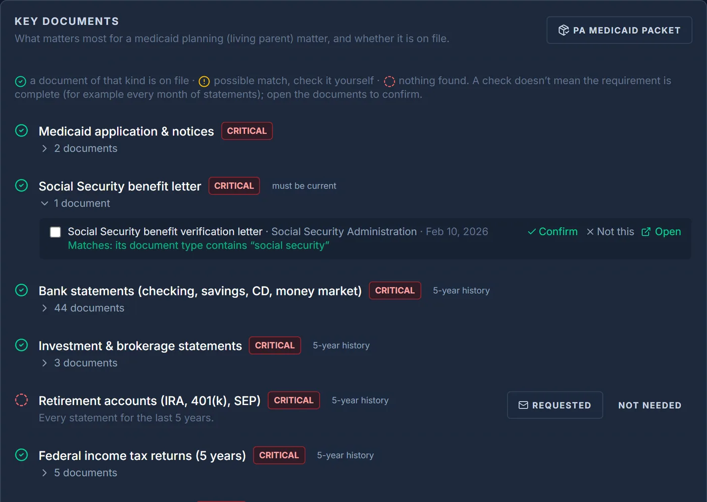
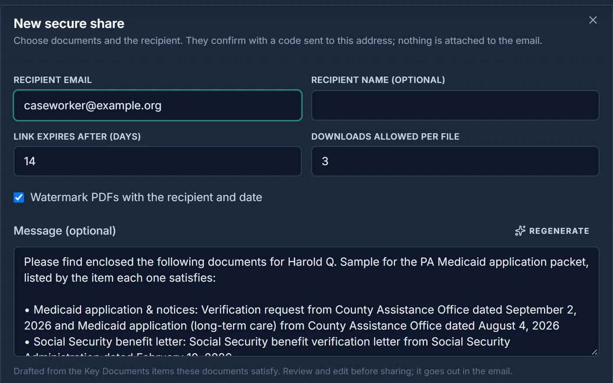
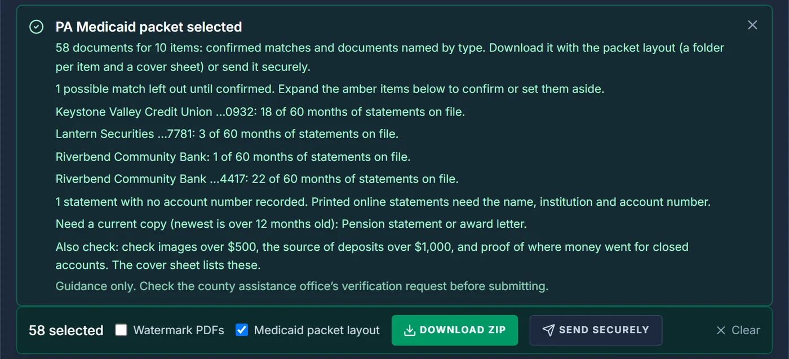
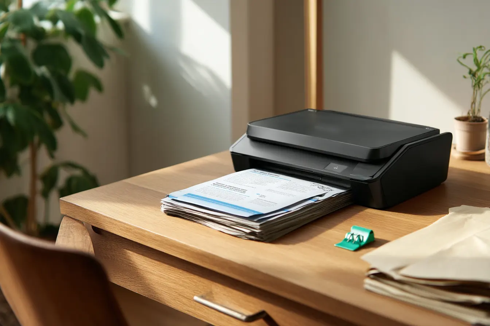

DossierIQ™ for elder law firms
From boxes of paper to a Medicaid-ready file.
DossierIQ scans, sorts and checks a client's documents, so your team can see what's on file, what's missing, and send it securely. Built for elder law and estate practices, starting with Medicaid planning.
Now taking a small number of founding firms. No cost during the pilot.
The paperwork shouldn't be the hardest part.
A Medicaid application can mean five years of statements for every account a client has ever had, arriving as shoeboxes, envelopes, email attachments and half-remembered online logins. Your staff scan it, rename it, file it, chase what's missing, and email it out again, usually against a deadline. One missing month can mean a denial for “failure to verify.”
- Paper keeps coming. Clients and families bring what they have, in whatever order they find it.
- Gaps are hard to see. Knowing which months are missing for which account means checking page by page.
- Sending is risky. Email attachments of bank statements and IDs travel with no record of who opened them.
Our flagship
DossierIQ: one organized, checkable file for every matter.
DossierIQ is document intake and organization built for the way elder law and estate firms actually work. It sits alongside your practice management software and handles the paper chase.
DossierIQ Scan
Scan a stack of paper on your office PC. DossierIQ Scan splits it into individual documents, names each one, and files it in the matter's folder in your firm's own Google Drive.
Key Documents and the Medicaid checklist
Each matter type has a checklist of the documents that matter most. DossierIQ shows what's on file, what's missing, and statement coverage month by month for the look-back, and your staff confirm each match.
Clean Room
Send documents through an expiring link instead of an attachment. Recipients verify with a one-time code, files can be watermarked and download-limited, and every view and download goes into a tamper-evident custody log.
Works with Google Workspace today. Microsoft 365 support is on our roadmap.



Screenshots show a demo firm with fictional clients and accounts.
Three steps from paper to proof.
- Open a matter. Choose the matter type, such as Medicaid planning. DossierIQ sets up the folders and a scan folder on your office PC.
- Scan and upload. Feed in the client's paper or upload files and email exports. Each document is split, named and filed automatically, and anything uncertain is flagged for your review.
- Check and send. Work the checklist, confirm matches, and share what's needed through a secure, logged link.

Built for elder law, not borrowed from litigation software.
Most practice management tools are designed around litigation. DossierIQ starts from the work elder law firms actually do: gathering a lifetime of records, proving five years of statements, and finding the accounts nobody wrote down.
- The 60-month look-back: coverage tracked by account and by month, so gaps show up before the caseworker finds them.
- Medicaid packet export: documents grouped by checklist item, with a cover sheet listing what's included and what's still missing.
- The digital estate: upload a client's email export and DossierIQ surfaces online accounts and recurring charges, so subscriptions and accounts don't get missed.
- Your judgment stays in charge: DossierIQ organizes and flags; attorneys and staff confirm. It's guidance, not legal advice.
Behind every file is a family trying to get it right.
Your clients' documents stay yours.
Elder law files hold the most sensitive information a family has. We built DossierIQ with that in mind, and we'll only tell you what's true today.
- Firm-owned storage: documents are stored in your firm's own Google Drive, not in a DossierIQ warehouse.
- Secure sharing with a record: Clean Room links expire, require a one-time code, and record every view and download in a tamper-evident log.
- Authority before access: sensitive discovery steps, like connecting a client's mailbox, require a recorded statement of the firm's authority first.
- Encrypted nightly backups. Every night the DossierIQ server and database are backed up, encrypted, and copied off-site, in addition to daily, weekly and monthly copies kept locally. We've verified those off-site backups can be recovered.
- Encryption at rest for connections: the keys DossierIQ uses to reach your storage are encrypted at rest.
- Credentials are never shared: documents marked as login credentials can't be sent through a share link or included in downloads.
- We don't sell your data. Not your firm's, not your clients'.
Questions about how DossierIQ handles data? Email info@pasi.llc and we'll walk you through it.
Help shape DossierIQ as a founding firm.
We're working closely with a small group of elder law and estate firms to make DossierIQ fit real practice. We're starting in Pennsylvania and glad to hear from firms anywhere in the US.
What your firm gets
- DossierIQ at no cost during the pilot
- Hands-on setup and training for your team
- A direct line to the founder; your feedback shapes what we build next
What we ask
- Use DossierIQ on real matters for the pilot period
- Short feedback conversations along the way
- If it helps you, a reference or a brief case study (only with your permission)
Google Workspace firms can start right away. Using Microsoft 365? Get in touch anyway; it's on our roadmap.
About PASI
Privileged Access Solutions Integration, LLC (PASI) builds secure software for professionals who handle sensitive information. DossierIQ is our flagship product.
Why we built DossierIQ
DossierIQ started at a kitchen table. When a parent in our family needed long-term care, we spent months gathering five years of bank statements, tax returns and insurance papers, then gathering them again when something went missing. The attorneys and staff helping us were excellent, and they were buried in the same paper.
PASI was founded by a technology professional with a background in protecting sensitive information. DossierIQ brings that same care to the files families trust their lawyers with: documents stay in the firm's own storage, every secure share is logged, and nothing is sold.
If your office spends its days chasing paperwork, we'd like to hear from you.
— Founder, PASI